Self-Made Legends LLC · Missouri, United States
Three shapes, ten colourways, and two named editions. Drawn for a first production run of two colourways.
Model 01
Low-cut court trainer. Full-grain leather upper, suede toe overlay, cupsole with a wrapped foxing tape, five-eyelet eyestay, and a single diagonal band across the lateral quarter.
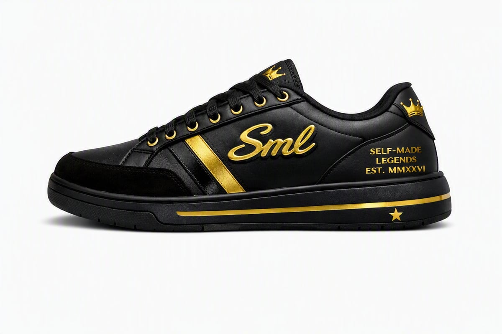
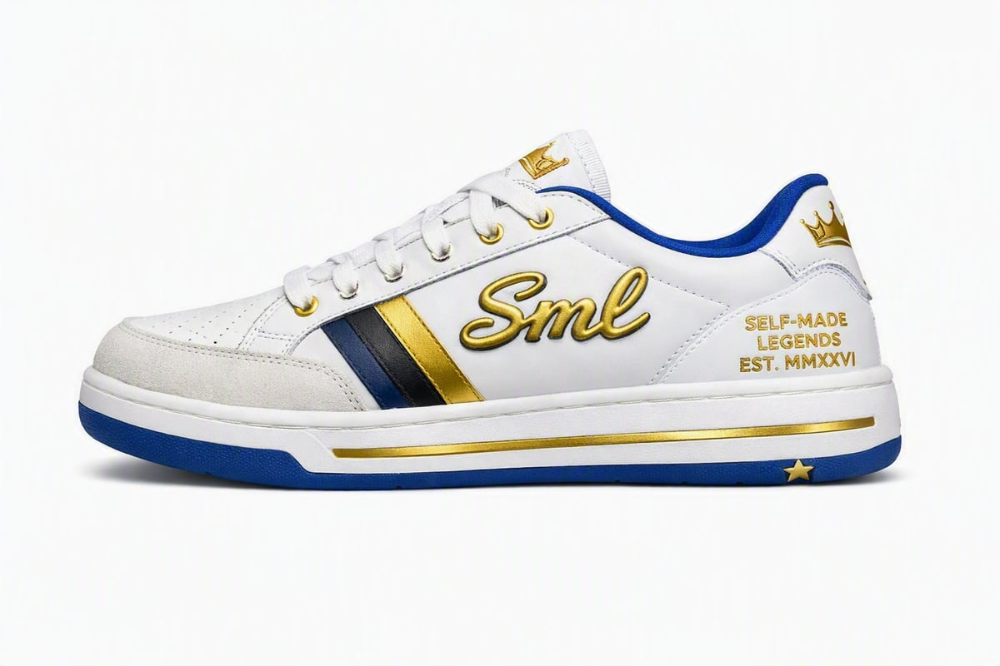
Full specification available on request. Bill of materials, graded points of measure with tolerances, construction, branding placements from fixed landmarks, and a list of open questions we would rather you answered than guessed at.
Model 02
Cushioned runner. Suede and mesh upper over a moulded midsole with a visible cushioning window, gum or matched outsole.
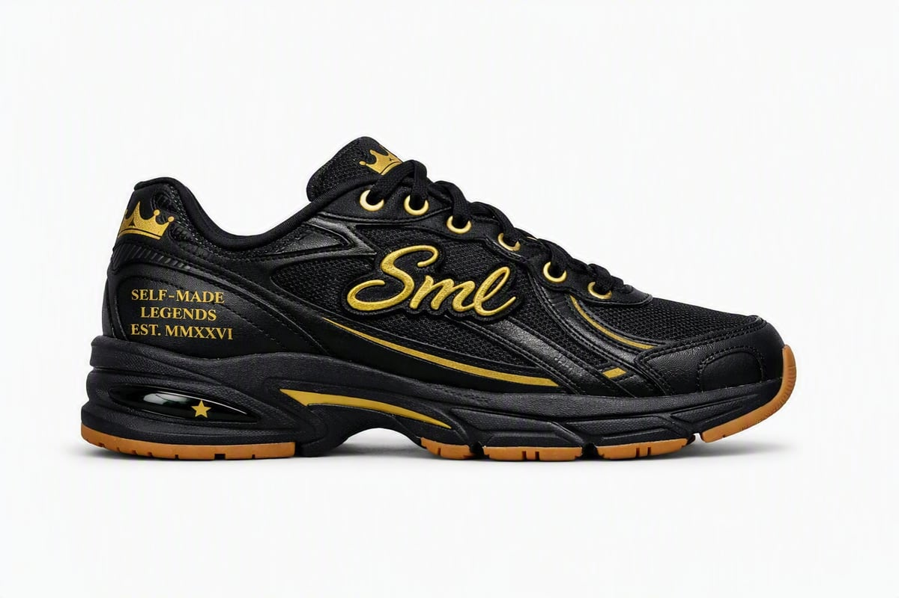
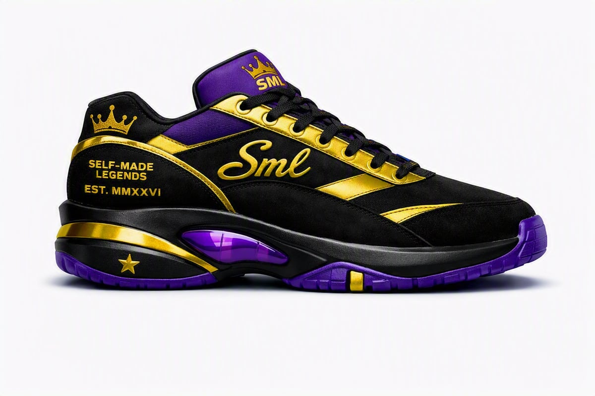
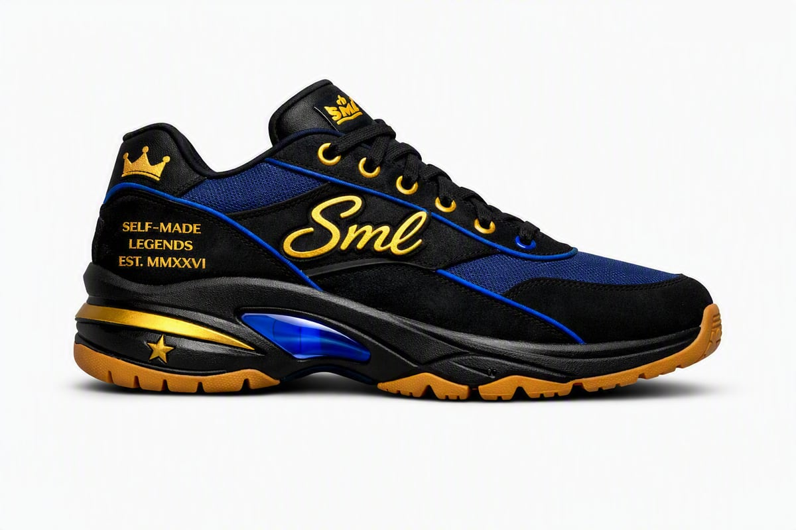
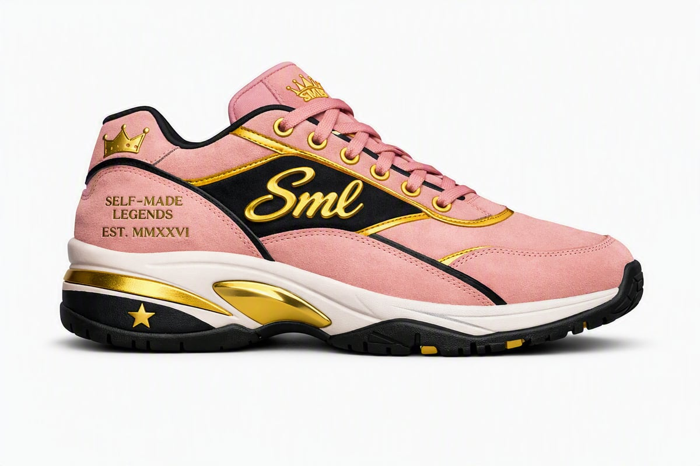
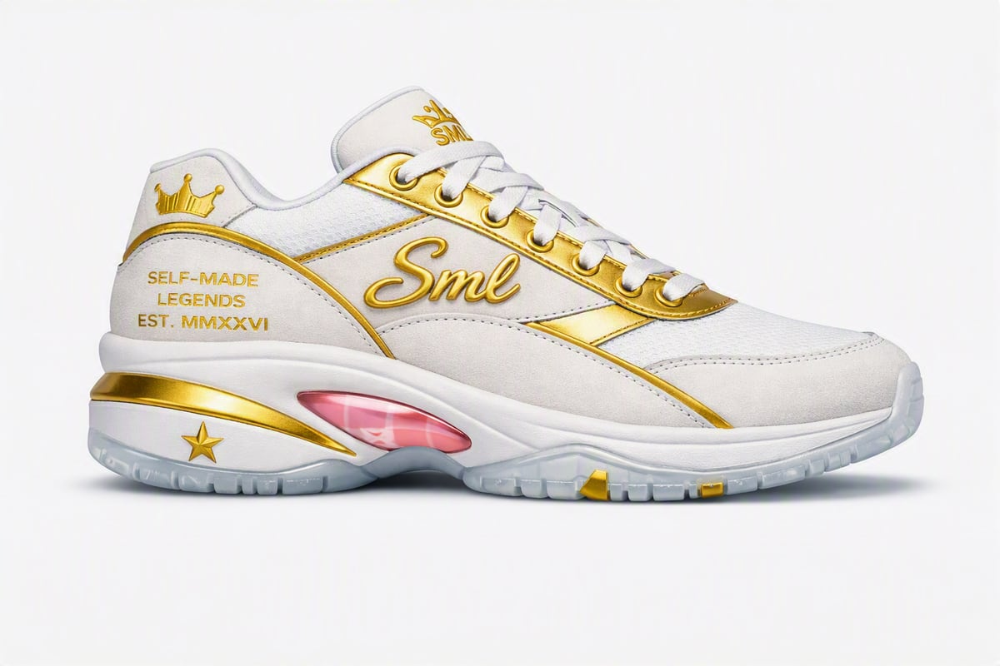
Model 03
Heritage runner. Suede and mesh over a wedge midsole and gum outsole, with a raised block wordmark at the lateral quarter.
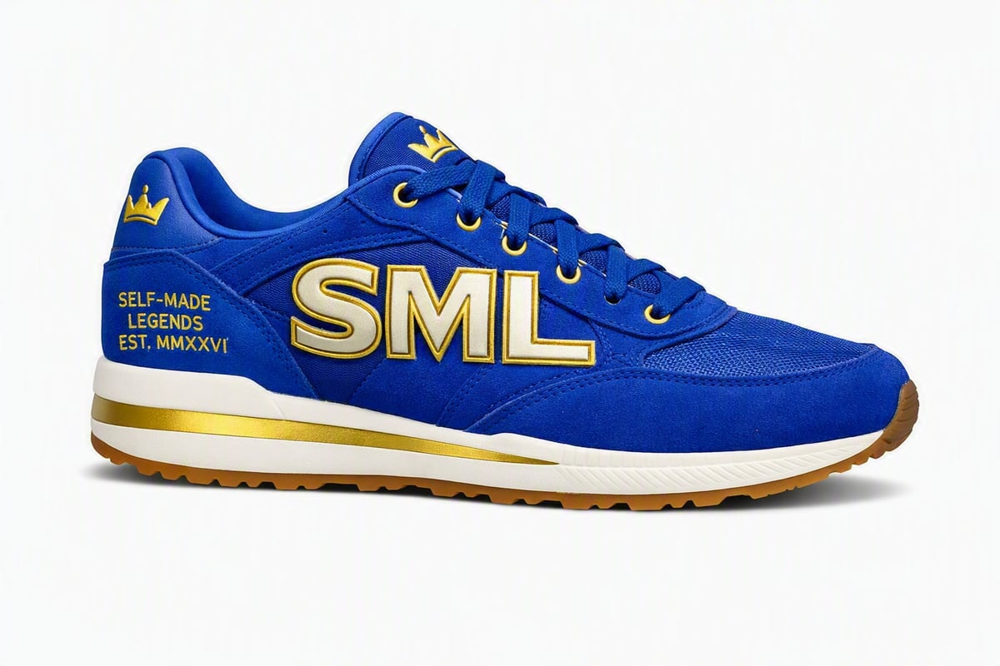
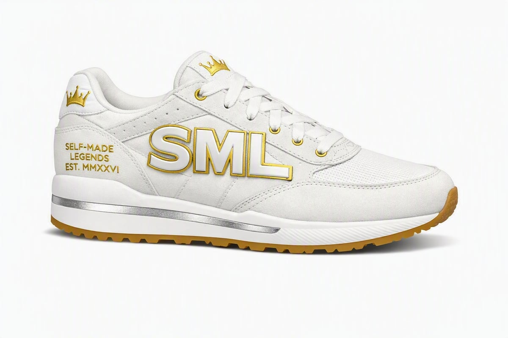
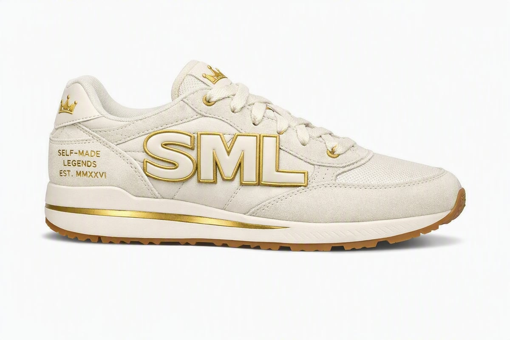
Named, not numbered
Applied graphics and embroidery on the SML 2s tooling. Both are about a person rather than a colourway.
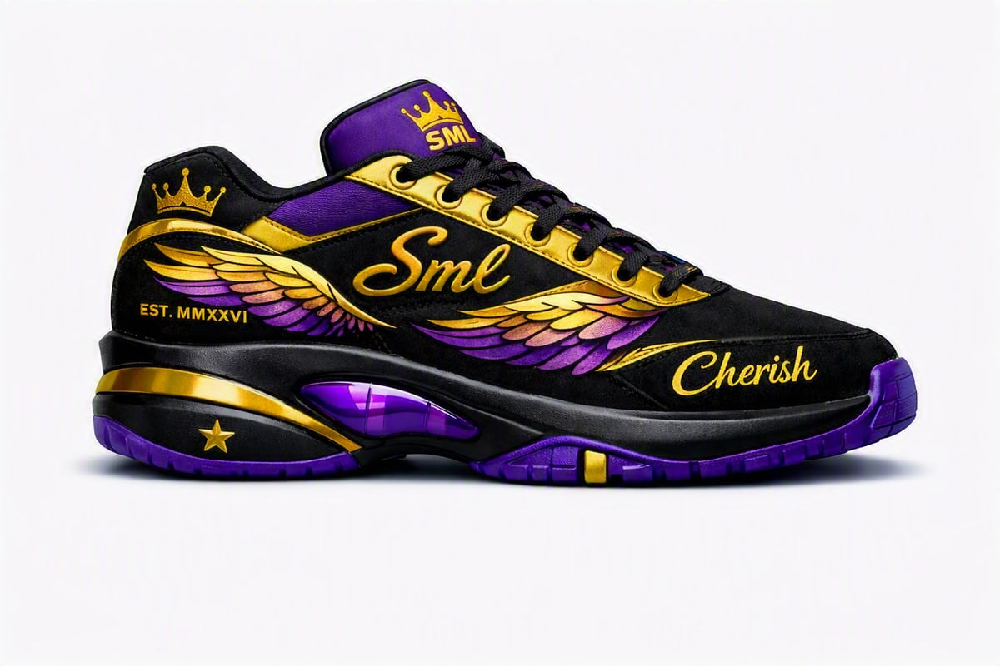
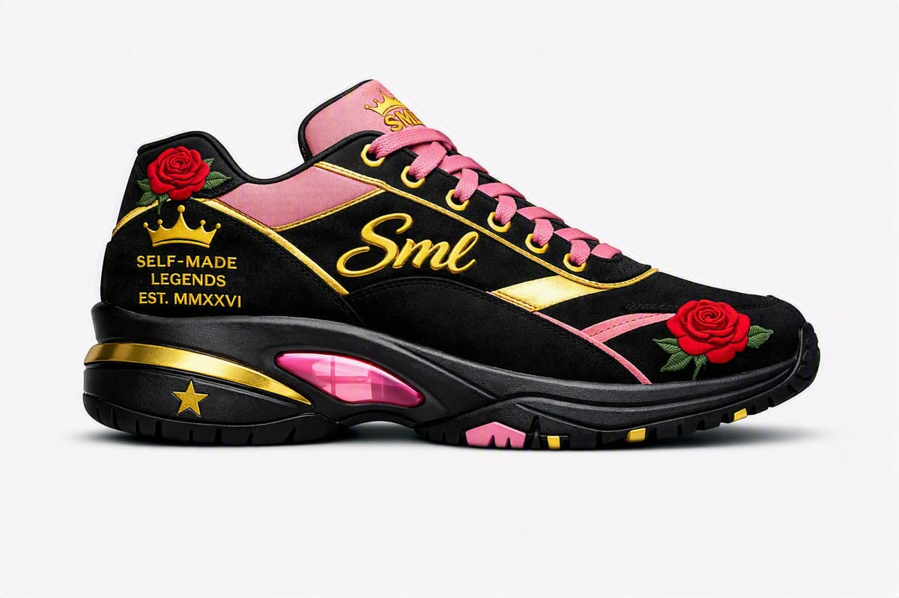
Embroidery on suede is the question here. The roses and the wings are the reason these two exist, so we need to know what you can hold at this scale before either is committed to a run.
What we are asking
Short answers are fine. We are choosing a production partner and would rather hear what you actually run than have you quote what we asked for.
| Item | Position |
|---|---|
| First run | Two colourways. Small on purpose. |
| Tooling | None. Stock last and stock sole unit for season one. |
| Upper | Full-grain leather and suede. Metallic gold detailing. |
| Branding | 3D moulded applique and debossed foil — not embroidery on the leather models. Embroidery is needed on the two editions. |
| Colour | Pantone TCX to be confirmed against physical swatches. We will not send hex values as a colour standard. |
| Sizing | US men's 7–13 including half sizes. Sample at 9. |
| Market | Direct to consumer, United States. |
These are design concepts, not photographs. No pair exists yet. The images are digital renders made while the shoes are being specified, and the specification is what we would build from — not the picture. Where the specification says UNKNOWN, it means we do not know yet and would like you to tell us.